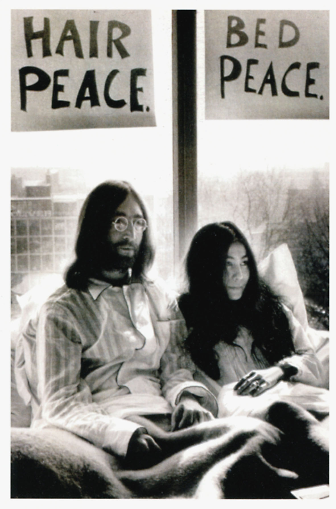

Monday, February the 20th, 2017
back to: title, date or indexes
I would not wish readers to miss a comment posted by Max Décharné on Ms Ono's birthday, so I have yanked it out and place it here for your edification:
Frank, inspired by your call to arms, I immediately wrote and staged a three-hour chirpy Cockney knees-up musical based upon the lives of our two multi-millionaire heroes, entitled “John & Yoko—I Should Coco,” in which the whole cast and audience bring the Grade 2-listed house down with a rousing final chorus of “Yes! Imagine We Have No Bananas, I Wonder If You Can?”
